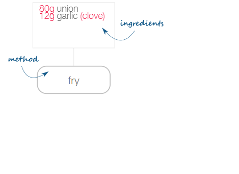
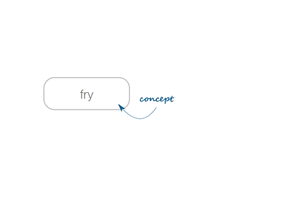
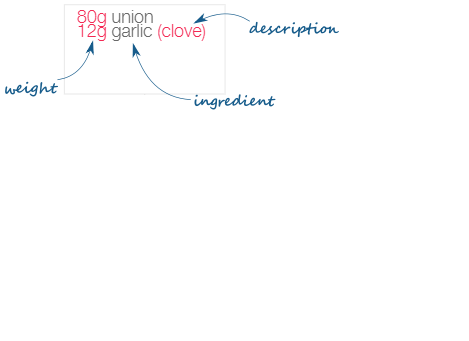
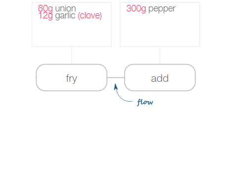
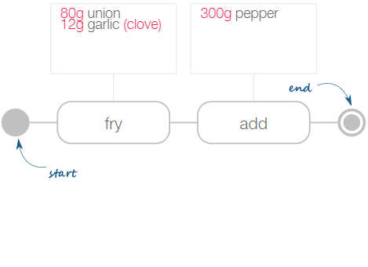
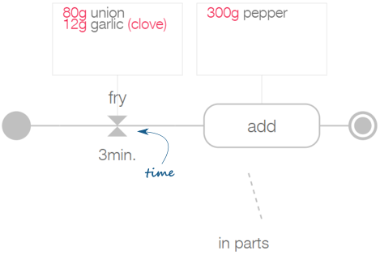
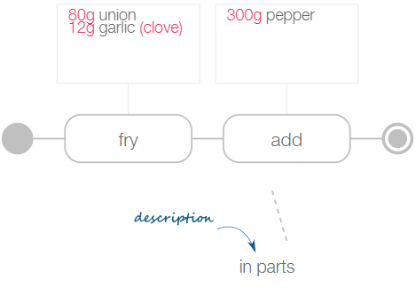

Help
instruction
Recipes are a series of short instructions. Each instruction stands on its own and includes a method and a list of ingredients.

method
A method is a concept with a name and description governed by an authority to be consistent across recipes and translated to multiple languages. Usually, a method is well defined and precise. 
ingredient
Ingredients are like methods, governed concepts. They can be complemented with additional information like weight and type. Also, an ingredient could act as a recipe itself like passata or mayonnaise. 
process
A sequence of instructions forms a process, visualised by a flow relation. The result of the previous instructions is the input of the following instruction. 
boundaries
Each process has a start and end node to represent the boundaries of the recipe. 
time
An instruction may have an additional time indicator. 
description
When the method is not sufficient an instruction may have a description. 
parallel
Often, you will prepare different instructions simultaneously, like cutting unions while boiling rice. (currently not available in flow creator)